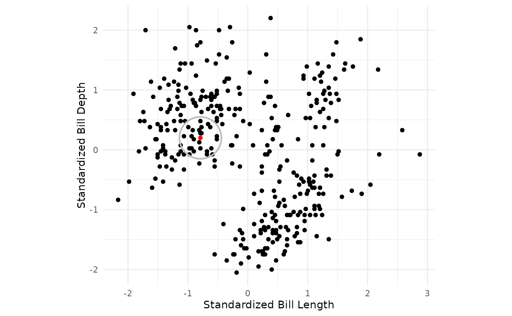
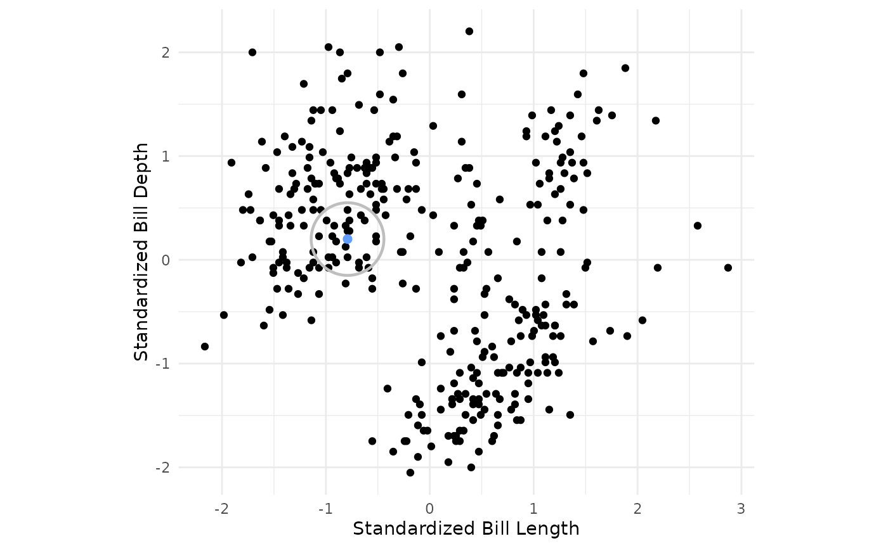
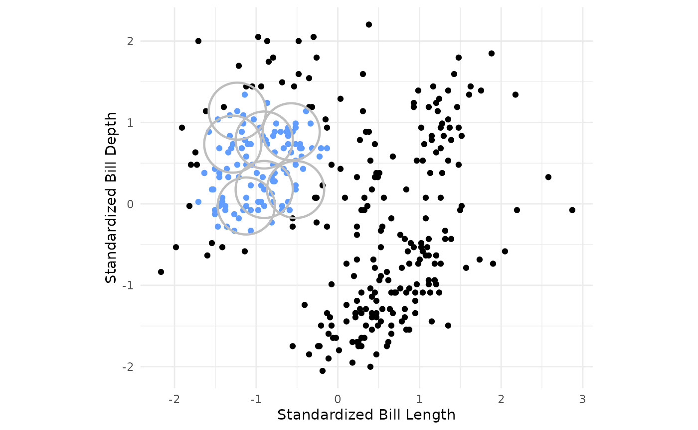
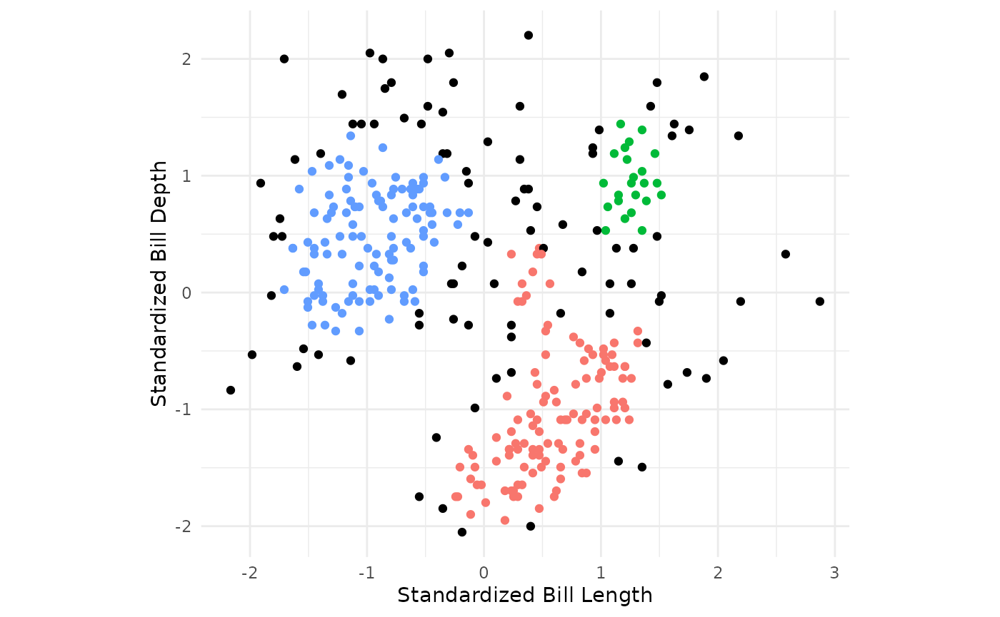
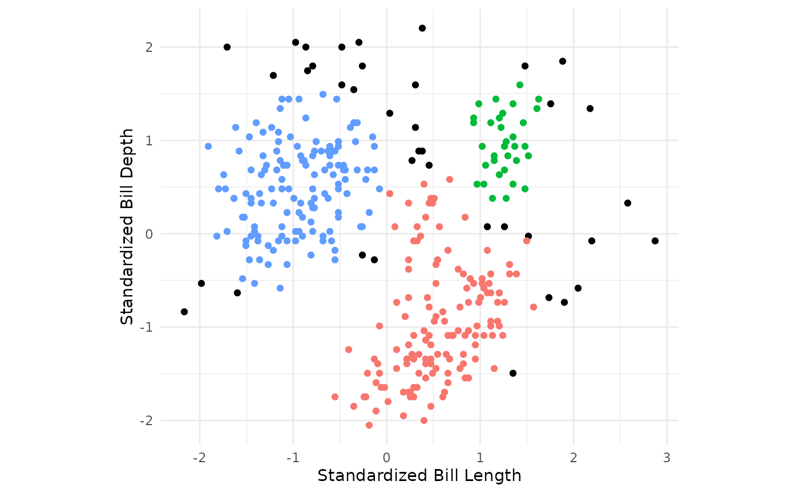

Setup
Load libraries:
Load and clean a dataset:
data("penguins", package = "modeldata")
penguins <- penguins %>%
select(bill_length_mm, bill_depth_mm) %>%
drop_na()
# shuffle rows
penguins <- penguins %>%
sample_n(nrow(penguins))At the end of this vignette, you will find a brief overview of the DBSCAN algorithm.
db_clust specification in {tidyclust}
To specify a DBSCAN model in tidyclust, simply set the
values for radius and min_pts:
db_clust_spec <- db_clust(radius = 0.35, min_points = 10)
db_clust_spec
#> DBSCAN Clustering Specification (partition)
#>
#> Main Arguments:
#> radius = 0.35
#> min_points = 10
#>
#> Computational engine: dbscanThere is currently one engine: dbscan::dbscan
(default)
Fitting db_clust models
After specifying the model specification, we fit the model to data in the usual way:
Note that I have standardized bill length and bill depth since DBSCAN uses euclidean distance to fit clusters and these variables are on different scales.
penguins_recipe <- recipe(~bill_length_mm + bill_depth_mm, data = penguins) %>%
step_normalize(all_numeric_predictors())
db_workflow <- workflow() %>%
add_model(db_clust_spec) %>%
add_recipe(penguins_recipe)
db_clust_fit <- db_workflow %>%
fit(data = penguins)
db_clust_fit %>%
summary()
#> Length Class Mode
#> pre 3 stage_pre list
#> fit 2 stage_fit list
#> post 2 stage_post list
#> trained 1 -none- logicalWe can also extract the standard tidyclust summary
list:
db_clust_summary <- db_clust_fit %>% extract_fit_summary()
db_clust_summary %>% str()
#> List of 7
#> $ cluster_names : Factor w/ 4 levels "Outlier","Cluster_1",..: 1 2 3 4
#> $ centroids : tibble [4 × 2] (S3: tbl_df/tbl/data.frame)
#> ..$ bill_length_mm: num [1:4] NA 0.555 -0.957 1.251
#> ..$ bill_depth_mm : num [1:4] NA -0.958 0.493 0.964
#> $ n_members : int [1:4] 38 135 136 33
#> $ sse_within_total_total: num [1:4] 92.6 80.4 11.3 NA
#> $ sse_total : num 455
#> $ orig_labels : NULL
#> $ cluster_assignments : Factor w/ 4 levels "Outlier","Cluster_1",..: 2 2 3 2 3 2 3 2 2 4 ...Cluster assignments and centers
The cluster assignments for the training data can be accessed using
the extract_cluster_assignment() function.
Note that the DBSCAN algorithm allows for some points to not be assigned clusters. These points are labeled as outliers.
db_clust_fit %>% extract_cluster_assignment()
#> # A tibble: 342 × 1
#> .cluster
#> <fct>
#> 1 Cluster_1
#> 2 Cluster_1
#> 3 Cluster_2
#> 4 Cluster_1
#> 5 Cluster_2
#> 6 Cluster_1
#> 7 Cluster_2
#> 8 Cluster_1
#> 9 Cluster_1
#> 10 Cluster_3
#> # ℹ 332 more rowsCentroids
While the centroids produced by a db_clust fit may not be of primary
interest, they can still be accessed via the
extract_fit_summary() object.
db_clust_fit %>% extract_centroids()
#> # A tibble: 4 × 3
#> .cluster bill_length_mm bill_depth_mm
#> <fct> <dbl> <dbl>
#> 1 Outlier NA NA
#> 2 Cluster_1 0.555 -0.958
#> 3 Cluster_2 -0.957 0.493
#> 4 Cluster_3 1.25 0.964Prediction
Since
algorithm ultimately assigns training observations to the clusters based
on proximity to core points, it is natural to “predict” that test
observations belong to a cluster if they are within radius
distance to a core point. To reconcile points being within the radius of
two core points that belong to different clusters, the
predict() function assigns new observations to the cluster
of the closest core point. If a point is not within the
radius of any core points, it is predicted to be an
outlier.
A brief introduction to density-based clustering
Density-Based Spatial Clustering of Applications with Noise (DBSCAN) is a method of unsupervised learning that groups observations into clusters based on their density in multidimensional space. Unlike methods such as k-means, DBSCAN does not require specifying the number of clusters beforehand and can identify clusters of arbitrary shapes. Additionally, it can classify points that do not belong to any cluster as outliers, allowing for greater flexibility in handling real-world data.
In DBSCAN, observations are considered as locations in multidimensional space. The algorithm works by defining a cluster as a dense region of connected points. During the fitting process, points are classified as core points, border points, or noise based on their proximity to other points (radius) and a density threshold (min_points).
The fitting process can be described as follows:
- Begin scanning the dataset for core points. A core point is defined as an observation which has more than the specified min_points points (including the point itself) within the specified radius around the point.

- If a core point is found, form a cluster with the core point and begin recursively building out the cluster to nearby core points.
penguins_std %>%
ggplot() +
geom_point(aes(x = bill_length_std, y = bill_depth_std)) +
theme_minimal() +
geom_circle(tibble(x = c(-0.79162259), y = c(0.2), radius = rep(eps,1)),
mapping = aes(x0 = x, y0 = y, r = eps),
color = "gray", linewidth = 0.8) +
geom_point(tibble(x = c(-0.79162259), y = c(0.2)), mapping = aes(x = x, y = y, color = c("1")), size = 2) +
coord_fixed() +
theme(legend.position = "none") +
scale_color_manual(values = c("#619CFF"))+
labs(x = "Standardized Bill Length", y = "Standardized Bill Depth")
- For every other point within the specified radius of the core point, search for other core points to add to the cluster. For every core point added, recursively search for core points within radius distance of any core point added until core points for the single cluster have been found.
penguins_new <- penguins_std
penguins_new$cluster <- (db_clust_fit %>% extract_cluster_assignment())$.cluster
# factor(dbscan_fit$cluster)
penguins_new$cp2 <- factor(if_else(as.numeric(is.corepoint(penguins_std, eps = eps, minPts = min_points)) == 1 & penguins_new$cluster == "Cluster_2", "Yes", "No"), levels = c("Yes", "No"))
penguins_new$radius <- if_else(penguins_new$cp2 == "Yes", eps, 0)
penguins_new_sub <- penguins_new %>% filter(cp2 == "Yes") %>%
.[c(2,3,4,5,7,9,16),]
penguins_new %>%
ggplot(aes(x = bill_length_std, y = bill_depth_std, color = cp2)) +
geom_point() +
theme_minimal() +
geom_circle(mapping = aes(x0 = bill_length_std, y0 = bill_depth_std, r = radius), color = "gray", linewidth = 0.8, data = penguins_new_sub) +
coord_fixed() +
scale_color_manual(values = c("#619CFF", "black")) +
theme(legend.position = "none")+
labs(x = "Standardized Bill Length", y = "Standardized Bill Depth")
- Repeat the previous steps until all core points for every cluster have been identified.

- For the remaining points not assigned to a cluster, check whether the point is within the radius of a core point and assign to cluster corresponding to nearest core point. Points not in the radius of any core points, are considered outliers.
